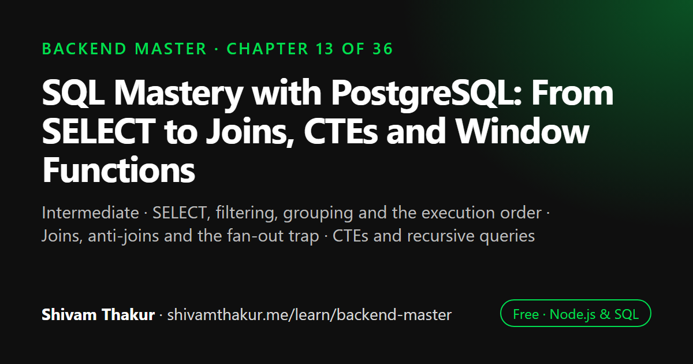

Chapter 13 of 36 · Intermediate
SQL Mastery with PostgreSQL: From SELECT to Joins, CTEs and Window Functions
SQL Mastery (PostgreSQL) — From SELECT to Window Functions

SQL is the language of relational data. This chapter teaches PostgreSQL from SELECT to joins, anti-joins, CTEs including recursive ones, window functions and JSONB, shows the traps that produce wrong numbers (NULLs and join fan-out), and covers safe Node.js patterns such as parameters and keyset pagination.
In this chapter you will learn
- SELECT, filtering, grouping and the execution order
- Joins, anti-joins and the fan-out trap
- CTEs and recursive queries
- Window functions: running totals, ranking, top N per group
- Using pg safely from Node.js
13.0 Why This Chapter Matters
SQL is the one programming language that has stayed essentially the same, and stayed essential, for fifty years. Frameworks, ORMs and trends come and go; the engineer who can think in SQL can answer almost any business question with one query and spot the slow, wrong, or dangerous query in a code review at a glance.
The common failure mode is not "can't write SQL." It is writing SQL that returns plausible but wrong numbers: revenue triple-counted by a join, customers silently dropped by a NULL, a "never ordered" report that returns zero because of a single stray value. These bugs don't crash; they produce confident, incorrect dashboards. In this chapter you'll see each of them happen, then learn the habits that prevent them.
By the end you'll be able to:
- Design tables with the right types and constraints.
- Read and write
INSERT,UPDATE,DELETE,UPSERTandRETURNING. - Filter, sort, group and aggregate, and understand SQL's real execution order.
- Use every kind of JOIN, including anti-joins, and avoid the fan-out trap.
- Write subqueries, CTEs (including recursive ones) and window functions.
- Query JSON and use views.
- Use SQL safely and idiomatically from Node.js.
Everything below was executed on PostgreSQL 17. Every result table is real output from the ShopLine dataset we define next.
13.1 The Four Families of SQL Statements
| Family | Stands for | Statements | Purpose |
|---|---|---|---|
| DDL | Data Definition | CREATE, ALTER, DROP |
Define the structure (tables, indexes) |
| DML | Data Manipulation | INSERT, UPDATE, DELETE |
Change the data |
| DQL | Data Query | SELECT |
Read data |
| TCL / DCL | Transaction / Control | BEGIN, COMMIT, ROLLBACK / GRANT, REVOKE |
Group statements; manage permissions |
Relational vocabulary
| SQL term | Meaning | Everyday analogy |
|---|---|---|
| Table (relation) | A set of rows with the same columns | A spreadsheet tab |
| Row (tuple) | One record | One line in the spreadsheet |
| Column (attribute) | One field with a type | A column header |
| Primary key | Column(s) uniquely identifying each row | A national ID number |
| Foreign key | A column referencing another table's key | "Customer #7" written on an order slip |
| Index | A lookup structure for fast search | A book's index |
| NULL | "Unknown / missing" (not zero, not empty) | A blank on a form |
13.2 Our Practice Database: ShopLine Schema v1
We'll use one small, deterministic dataset for the entire chapter so you can reproduce every result. Here is the structure:
users 1───∞ orders 1───∞ order_items ∞───1 products ∞───1 categories ──┐ (parent_id → itself)
│ │ └─ tree: Stationery → Notebooks, Pens
└───────────────∞ reviews ∞────────────────────┘13.2.1 Choosing data types (and why)
This is where schema quality starts. Rules of thumb for PostgreSQL:
| Data | Use | Avoid | Why |
|---|---|---|---|
| Surrogate ids | bigint GENERATED ALWAYS AS IDENTITY |
serial; int for big tables |
Standard SQL, harder to mis-insert; int overflows at ~2.1 billion |
| Money | integer/bigint in minor units (paise), or numeric(12,2) |
float, real, money |
Floating point can't represent 0.1 exactly (Chapter 8) |
| Text | text |
varchar(n) unless a real limit exists |
In PostgreSQL they perform identically; arbitrary limits just cause bugs |
| Time | timestamptz |
timestamp (without zone) |
Stores an absolute instant; see §13.13 |
| Flags | boolean |
int 0/1, 'Y'/'N' |
Clarity |
| Fixed set | text + CHECK (... IN (...)), or enum |
free text | The database enforces the vocabulary |
| Semi-structured | jsonb |
json |
jsonb is indexable and faster to query |
| Unique ids across systems | uuid |
Safe to generate in the app |
13.2.2 The DDL
CREATE TABLE users (
id bigint GENERATED ALWAYS AS IDENTITY PRIMARY KEY,
email text NOT NULL UNIQUE,
name text NOT NULL,
country char(2) NOT NULL,
phone text, -- nullable on purpose (NULL demos)
created_at timestamptz NOT NULL DEFAULT now()
);
CREATE TABLE categories (
id int GENERATED ALWAYS AS IDENTITY PRIMARY KEY,
name text NOT NULL UNIQUE,
parent_id int REFERENCES categories (id) -- self-reference builds a tree
);
CREATE TABLE products (
id bigint GENERATED ALWAYS AS IDENTITY PRIMARY KEY,
category_id int NOT NULL REFERENCES categories (id),
name text NOT NULL,
price_minor integer NOT NULL CHECK (price_minor >= 0),
stock integer NOT NULL DEFAULT 0 CHECK (stock >= 0),
active boolean NOT NULL DEFAULT true,
attrs jsonb NOT NULL DEFAULT '{}'
);
CREATE TABLE orders (
id bigint GENERATED ALWAYS AS IDENTITY PRIMARY KEY,
user_id bigint NOT NULL REFERENCES users (id),
status text NOT NULL CHECK (status IN ('pending','paid','shipped','delivered','cancelled')),
created_at timestamptz NOT NULL
);
CREATE TABLE order_items (
order_id bigint NOT NULL REFERENCES orders (id) ON DELETE CASCADE,
product_id bigint NOT NULL REFERENCES products (id),
quantity integer NOT NULL CHECK (quantity > 0),
unit_price_minor integer NOT NULL CHECK (unit_price_minor >= 0), -- price AT THE TIME of purchase
PRIMARY KEY (order_id, product_id) -- composite key
);
CREATE TABLE reviews (
id bigint GENERATED ALWAYS AS IDENTITY PRIMARY KEY,
product_id bigint NOT NULL REFERENCES products (id),
user_id bigint NOT NULL REFERENCES users (id),
rating integer NOT NULL CHECK (rating BETWEEN 1 AND 5),
body text,
created_at timestamptz NOT NULL DEFAULT now(),
UNIQUE (product_id, user_id) -- one review per user per product
);Notice how much business logic the schema already encodes: no negative stock, no 0-quantity line, only valid statuses, one review per user per product, no orphan orders. The database enforces these for every client, forever, including future code, scripts and that 2 a.m. manual fix.
Notice also unit_price_minor on order_items: we copy the price at purchase time rather than joining to products.price_minor. Prices change; historical orders must not. (This is deliberate denormalization; Chapter 14.)
13.2.3 The data
users (5), categories (5), products (8), orders (9), 14 order lines and 7 reviews, seeded by hand so results are easy to verify:
users: Asha(IN) Ravi(IN, no phone) Mei(SG) Lena(DE, no phone) Omar(AE, never ordered)
categories: Stationery ─┬─ Notebooks Bags ─── Backpacks
└─ Pens
products: Notebook A5 ₹120 · Notebook A4 ₹180 · Gel Pen ₹15 · Fountain Pen ₹450 ·
Backpack 20L ₹899 · Laptop Bag ₹1299 · Sticky Notes ₹25 (inactive, stock 0) · Eraser ₹5 (never sold)
orders: 9 orders Aug–Oct 2026: delivered ×5, shipped, paid, pending, cancelledThe complete, tested schema and every INSERT are in resources/shopline-schema.sql, and every query in this chapter is in resources/ch13-queries.sql. Load them with:
docker exec -i shopline-pg psql -U postgres -d shopline < resources/shopline-schema.sql
docker exec -i shopline-pg psql -U postgres -d shopline < resources/ch13-queries.sqlRunning SQL
docker exec -it shopline-pg psql -U postgres -d shopline # interactive
docker exec -i shopline-pg psql -U postgres -d shopline < file.sqlHandy psql commands: \dt (list tables), \d products (describe), \x (expanded view), \timing (show query time), \q (quit).
13.3 Writing Data: INSERT, UPDATE, DELETE, UPSERT
13.3.1 INSERT
INSERT INTO users (email, name, country) VALUES ('zoe@example.com', 'Zoe', 'US');
INSERT INTO products (category_id, name, price_minor, stock)
VALUES (3, 'Marker', 2000, 100), (3, 'Highlighter', 3000, 50); -- many rows, one statementAlways name the columns: INSERT INTO t VALUES (...) breaks silently when someone adds or reorders a column.
13.3.2 RETURNING: get the result of a write
PostgreSQL can return values from INSERT/UPDATE/DELETE in the same statement, saving a round trip and avoiding race conditions:
UPDATE products SET price_minor = price_minor * 110 / 100 WHERE category_id = 3
RETURNING id, name, price_minor; id | name | price_minor
----+--------------+-------------
3 | Gel Pen | 1650
4 | Fountain Pen | 49500
8 | Eraser | 550This is how an API creates a row and returns its generated id and timestamps in one query: INSERT ... RETURNING id, created_at.
13.3.3 UPSERT: INSERT ... ON CONFLICT
"Insert this, but if it already exists, update (or ignore) instead," atomically and safely under concurrency:
INSERT INTO reviews (product_id, user_id, rating, body) VALUES (1, 1, 3, 'changed my mind')
ON CONFLICT (product_id, user_id) -- the UNIQUE constraint that might collide
DO UPDATE SET rating = EXCLUDED.rating, body = EXCLUDED.body -- EXCLUDED = the row we tried to insert
RETURNING id, product_id, user_id, rating, body; id | product_id | user_id | rating | body
----+------------+---------+--------+-----------------
1 | 1 | 1 | 3 | changed my mind ← updated the existing reviewINSERT INTO reviews (product_id, user_id, rating) VALUES (1, 1, 5)
ON CONFLICT DO NOTHING RETURNING id;
-- (0 rows) ← silently skipped; RETURNING gives nothing when nothing was insertedDo not implement upsert as "SELECT, then INSERT or UPDATE" in application code: two concurrent requests both see "not found" and both insert (a race; Chapters 12 and 16). ON CONFLICT makes the database do it atomically.
(Those statements were run inside BEGIN … ROLLBACK, so the demo data stayed intact. A great trick for experimenting safely.)
13.3.4 UPDATE and DELETE: always have a WHERE
UPDATE products SET stock = stock + 100 WHERE id = 3; -- one row
DELETE FROM reviews WHERE rating = 1 AND created_at < now() - interval '1 year';An UPDATE or DELETE without WHERE affects every row. Habit: write the WHERE first, or run a SELECT with the same WHERE beforehand, or wrap in BEGIN and check the row count before COMMIT. In production, prefer soft deletes (deleted_at timestamptz) for important entities, but remember every query must then filter them out (Chapter 14).
13.3.5 Constraint violations are your friends
When someone tries to write bad data, the database refuses with a precise error. All four of these were run against ShopLine:
INSERT INTO users (email, name, country) VALUES ('asha@example.com', 'Dup', 'IN');
-- ERROR: duplicate key value violates unique constraint "users_email_key"
-- DETAIL: Key (email)=(asha@example.com) already exists.
INSERT INTO orders (user_id, status, created_at) VALUES (999, 'paid', now());
-- ERROR: insert or update on table "orders" violates foreign key constraint "orders_user_id_fkey"
-- DETAIL: Key (user_id)=(999) is not present in table "users".
INSERT INTO order_items VALUES (1, 1, 0, 100);
-- ERROR: new row for relation "order_items" violates check constraint "order_items_quantity_check"
INSERT INTO products (category_id, name, price_minor) VALUES (2, NULL, 5);
-- ERROR: null value in column "name" of relation "products" violates not-null constraintIn your API, catch these by error code (23505 unique, 23503 foreign key, 23514 check, 23502 not-null) and map them to 409/422 responses. That's far more reliable than checking first and inserting second.
try { await pool.query('INSERT INTO users ...', [email, name]); }
catch (e) { if (e.code === '23505') throw conflict('Email already registered'); throw e; }13.4 SELECT: Reading Data
13.4.1 The anatomy and the real order of execution
You write SELECT first, but the database evaluates it in a different order. Knowing the real order explains most "why can't I use that alias here?" puzzles:
What you write What happens (logical order)
─────────────── ───────────────────────────────────────────
SELECT columns / expressions 5. SELECT compute output columns (and aliases)
FROM tables, joins 1. FROM / JOIN build the working row set
WHERE row filter 2. WHERE drop rows (before grouping)
GROUP BY grouping 3. GROUP BY form groups
HAVING group filter 4. HAVING drop groups (after aggregating)
ORDER BY sort 6. ORDER BY sort (can use SELECT aliases)
LIMIT/OFFSET 7. LIMIT/OFFSETConsequences:
WHEREruns before aggregation, so it cannot referencecount(*)orsum(...). UseHAVINGfor conditions on aggregates.WHEREruns beforeSELECT, so it cannot use a column alias defined inSELECT.ORDER BYruns after, so it can.
13.4.2 Filtering and sorting
SELECT id, name, price_minor
FROM products
WHERE active AND price_minor < 20000
ORDER BY price_minor DESC
LIMIT 3; id | name | price_minor
----+-------------+-------------
2 | Notebook A4 | 18000
1 | Notebook A5 | 12000
3 | Gel Pen | 1500Useful operators:
| Operator | Example |
|---|---|
| Comparison | =, <> (or !=), <, <=, >, >= |
| Logic | AND, OR, NOT (use parentheses to be explicit) |
| Range / set | BETWEEN 10 AND 20 (inclusive), IN (1, 3, 5) |
| Pattern | LIKE 'Note%' (case-sensitive), ILIKE '%pen%' (case-insensitive); % = any text, _ = one char |
| Null tests | IS NULL, IS NOT NULL, IS DISTINCT FROM |
| Array/any | = ANY(ARRAY[1,2,3]) |
13.4.3 NULL: the source of more bugs than anything else in SQL
NULL means unknown, and SQL uses three-valued logic: every condition is TRUE, FALSE or UNKNOWN. WHERE keeps only TRUE rows, so rows where the condition is UNKNOWN are silently dropped.
Four real queries on users.phone (two users have no phone):
SELECT name, phone FROM users WHERE phone = NULL;(0 rows) ← NOT what you meant: "= NULL" is never true, even for NULLsSELECT name, phone FROM users WHERE phone IS NULL; name | phone
------+-------
Ravi | ∅
Lena | ∅SELECT name, phone FROM users WHERE phone <> '+91-90000-00001'; name | phone
------+------------------
Mei | +65-8000-0003
Omar | +971-50-000-0005Where are Ravi and Lena? "Not equal to Asha's number" is unknown for a missing phone, so they vanish. Most people expect them to appear. If you want them: phone IS DISTINCT FROM '+91-90000-00001'.
SELECT name, COALESCE(phone, 'no phone') AS phone FROM users ORDER BY id;COALESCE(a, b, c) returns the first non-NULL argument: the standard way to supply defaults.
NULL rules to memorize:
| Expression | Result |
|---|---|
NULL = NULL |
NULL (not true!) |
NULL AND FALSE |
FALSE |
NULL OR TRUE |
TRUE |
NULL + 5 |
NULL |
count(*) vs count(col) |
count(*) counts rows; count(col) skips NULLs |
sum, avg, min, max |
Ignore NULLs (and return NULL if all are NULL) |
ORDER BY col |
NULLs sort last in ascending order (control with NULLS FIRST/LAST) |
UNIQUE columns |
Multiple NULLs are allowed (each is "unknown," so none conflict) |
13.4.4 LIMIT, OFFSET and DISTINCT
SELECT DISTINCT country FROM users ORDER BY country; -- unique values
SELECT * FROM products ORDER BY id LIMIT 3 OFFSET 3; -- page 2 of size 3 (offset pagination)OFFSET pagination has the deep-page problem from Chapter 8. Prefer keyset pagination (§13.12). And LIMIT without ORDER BY returns an arbitrary set; always sort.
13.5 Aggregation: Summarizing Many Rows
13.5.1 The aggregate functions
count, sum, avg, min, max, plus string_agg, array_agg, bool_and, percentile_cont and more.
SELECT count(*) AS all_users, count(phone) AS with_phone FROM users; all_users | with_phone
-----------+------------
5 | 3count(*) counted 5 rows; count(phone) counted only the 3 non-NULL values.
13.5.2 GROUP BY: one result row per group
Revenue by month, counting only orders that actually generated money:
SELECT date_trunc('month', o.created_at)::date AS month,
count(DISTINCT o.id) AS orders,
sum(oi.quantity * oi.unit_price_minor) AS revenue_minor
FROM orders o
JOIN order_items oi ON oi.order_id = o.id
WHERE o.status IN ('paid','shipped','delivered')
GROUP BY 1
ORDER BY 1; month | orders | revenue_minor
------------+--------+---------------
2026-08-01 | 2 | 121400
2026-09-01 | 3 | 243900
2026-10-01 | 2 | 118400Details:
date_trunc('month', ts)snaps a timestamp to the start of its month, the idiom for time bucketing ('day','week','year'also work).GROUP BY 1refers to the firstSELECTcolumn (handy but use sparingly for readability).count(DISTINCT o.id): each order appears once per line item after the join, so a plaincount(*)would count lines, not orders. A small example of a join multiplying rows (a theme of §13.6.4).- Money is in minor units: 243,900 paise is ₹2,439.00. Format at the edge (the UI).
The GROUP BY rule
Every column in SELECT must either be in the GROUP BY or inside an aggregate. PostgreSQL enforces it (MySQL historically didn't, returning arbitrary values, a notorious bug source).
13.5.3 HAVING: filtering groups
SELECT u.name, count(*) AS orders
FROM users u JOIN orders o ON o.user_id = u.id
GROUP BY u.id, u.name
HAVING count(*) > 1
ORDER BY orders DESC, u.name; name | orders
------+--------
Asha | 4
Mei | 2
Ravi | 2WHERE filters rows before grouping; HAVING filters groups after aggregating. (GROUP BY u.id, u.name: group by the primary key, and include name because it's selected.)
13.5.4 FILTER: conditional aggregates in one pass
Instead of multiple queries or clunky CASE expressions:
SELECT count(*) AS total,
count(*) FILTER (WHERE status = 'delivered') AS delivered,
count(*) FILTER (WHERE status = 'cancelled') AS cancelled
FROM orders; total | delivered | cancelled
-------+-----------+-----------
9 | 5 | 1One scan of the table produces a whole dashboard row.
13.6 JOINs: Combining Tables
Relational databases split data into tables to avoid duplication (Chapter 14); JOINs put it back together at query time.
13.6.1 The join types
Think of two sets: A = rows from the left table, B = rows from the right table, linked by ON.
INNER JOIN A ∩ B only rows with a match on both sides
LEFT JOIN A + (A∩B) all of A; B's columns are NULL where there's no match
RIGHT JOIN B + (A∩B) mirror image (rarely needed: swap table order and use LEFT)
FULL OUTER JOIN A ∪ B everything; NULLs where either side has no match
CROSS JOIN A × B every combination (no ON); used with generate_series-- INNER: orders with their customer. Rows with no match on either side disappear.
SELECT o.id, u.name FROM orders o JOIN users u ON u.id = o.user_id;
-- LEFT: ALL users, with their orders if they have any
SELECT u.name, o.id FROM users u LEFT JOIN orders o ON o.user_id = u.id;13.6.2 Finding "the absence of something": the anti-join
"Which users never ordered?" "Which products never sold?" These are anti-joins, among the most useful (and most botched) queries in practice.
Pattern A: LEFT JOIN ... IS NULL
SELECT u.name FROM users u LEFT JOIN orders o ON o.user_id = u.id WHERE o.id IS NULL; name
------
OmarPattern B: NOT EXISTS (usually the clearest and safest)
SELECT p.id, p.name FROM products p
WHERE NOT EXISTS (SELECT 1 FROM order_items oi WHERE oi.product_id = p.id)
ORDER BY p.id; id | name
----+--------------
7 | Sticky Notes
8 | EraserPattern C: NOT IN, with a deadly trap. It looks fine:
SELECT count(*) FROM users WHERE id NOT IN (SELECT user_id FROM orders); never_ordered_notin
---------------------
1 ← correct (Omar)Now imagine the subquery returns a single NULL (a legacy order with no user, a bad import). I simulated exactly that:
SELECT count(*) FROM users
WHERE id NOT IN (SELECT user_id FROM orders UNION ALL SELECT NULL); never_ordered_notin_with_a_null
---------------------------------
0 ← WRONG. Silently reports that EVERYONE has orderedWhy? id NOT IN (1, 2, 3, NULL) expands to id <> 1 AND id <> 2 AND id <> 3 AND id <> NULL. The last term is UNKNOWN, so the whole condition can never be TRUE. One NULL makes NOT IN return nothing. A report like this can go wrong for months without anyone noticing.
Rule: use
NOT EXISTS, notNOT IN, for anti-joins. It handles NULLs correctly.
13.6.3 Joining to find the latest/first per entity: LATERAL
"Each user's most recent order." A LATERAL subquery can reference columns from earlier FROM items, like a per-row function call:
SELECT u.name, lo.id AS last_order, lo.created_at::date AS on_day
FROM users u
LEFT JOIN LATERAL (
SELECT id, created_at FROM orders o WHERE o.user_id = u.id ORDER BY created_at DESC LIMIT 1
) lo ON true
ORDER BY u.id; name | last_order | on_day
------+------------+------------
Asha | 9 | 2026-10-12
Ravi | 7 | 2026-10-03
Mei | 8 | 2026-10-07
Lena | 6 | 2026-09-21
Omar | ∅ | ∅(LEFT JOIN LATERAL ... ON true keeps users with no orders, like Omar.) With the right index, this is very efficient. It's the clean way to do top-N-per-parent.
13.6.4 The JOIN fan-out trap: how revenue gets triple-counted
This is the most common source of silently wrong numbers in analytics SQL. Suppose we want revenue and review stats per product, and we join everything in one go:
SELECT p.name, sum(oi.quantity * oi.unit_price_minor) AS wrong_revenue
FROM products p
JOIN order_items oi ON oi.product_id = p.id
JOIN reviews r ON r.product_id = p.id -- ← one row per review multiplies each order line!
GROUP BY p.id, p.name ORDER BY p.id; name | wrong_revenue
--------------+---------------
Notebook A5 | 144000
Gel Pen | 54000
Fountain Pen | 135000
Backpack 20L | 269700Compare with the correct totals, built by aggregating each side before joining:
SELECT p.name, s.revenue_minor, r.reviews, r.avg_rating
FROM products p
JOIN (SELECT product_id, sum(quantity * unit_price_minor) AS revenue_minor
FROM order_items GROUP BY 1) s ON s.product_id = p.id
LEFT JOIN (SELECT product_id, count(*) AS reviews, round(avg(rating), 2) AS avg_rating
FROM reviews GROUP BY 1) r ON r.product_id = p.id
ORDER BY p.id; name | revenue_minor | reviews | avg_rating
--------------+---------------+---------+------------
Notebook A5 | 48000 | 3 | 4.33
Notebook A4 | 54000 | ∅ | ∅
Gel Pen | 27000 | 2 | 4.00
Fountain Pen | 135000 | 1 | 2.00
Backpack 20L | 269700 | 1 | 5.00
Laptop Bag | 129900 | ∅ | ∅Notebook A5's true revenue is 48,000, but the naive query reported 144,000: exactly 3×, because it has 3 reviews and the join paired each order line with each review. Gel Pen (2 reviews): 27,000 × 2 = 54,000. Notebook A4 and Laptop Bag vanished entirely (no reviews → no rows from the inner join).
order_items rows for Notebook A5: [line1] [line2] [line3]
reviews rows for Notebook A5: [rev1] [rev2] [rev3]
JOIN ON product_id gives 3 × 3 = 9 pairs, but only 3 lines were sold...
(the sum counts each line once per matching review → ×3)The rule: when joining two one-to-many relationships to the same parent, they multiply each other. Aggregate each "many" side to one row per parent first (subquery/CTE), then join. Whenever a number looks too good, count your join paths.
13.6.5 Self-joins
A table joined to itself, e.g., finding a category's parent name:
SELECT c.name AS category, p.name AS parent
FROM categories c LEFT JOIN categories p ON p.id = c.parent_id;13.6.6 Join performance (preview)
Joins on indexed columns (primary and foreign keys) are fast; joins on unindexed columns scan. Note PostgreSQL does not automatically index foreign keys, so add indexes on FK columns you join/filter on (orders.user_id, order_items.product_id...). Chapter 15 covers this with EXPLAIN.
13.7 Subqueries and CTEs
13.7.1 Subqueries
A query inside a query. Three common uses:
-- scalar subquery: one value
SELECT name, price_minor, price_minor - (SELECT avg(price_minor) FROM products) AS vs_average FROM products;
-- IN / EXISTS: filter by another query
SELECT name FROM users u WHERE EXISTS (SELECT 1 FROM orders o WHERE o.user_id = u.id AND o.status = 'delivered');
-- derived table: a query used as a table
SELECT * FROM (SELECT user_id, count(*) n FROM orders GROUP BY 1) t WHERE n > 1;A correlated subquery references the outer query (o.user_id = u.id) and is conceptually re-run per outer row, though the planner often turns it into a join. EXISTS is the right tool for "is there at least one…", and short-circuits on the first match.
13.7.2 CTEs: naming your intermediate steps
A Common Table Expression (WITH) gives a subquery a name, letting you build a query in readable steps, like variables in a program:
WITH monthly AS (
SELECT date_trunc('month', o.created_at)::date AS month,
sum(oi.quantity * oi.unit_price_minor) AS revenue
FROM orders o JOIN order_items oi ON oi.order_id = o.id
WHERE o.status <> 'cancelled'
GROUP BY 1
)
SELECT month, revenue FROM monthly ORDER BY month;Use CTEs to flatten deeply nested subqueries and to reuse a result multiple times in the same query. Since PostgreSQL 12, a simple CTE referenced once is inlined into the main query (no performance penalty); add MATERIALIZED to force it to compute once, or NOT MATERIALIZED to force inlining.
13.7.3 Recursive CTEs: trees and graphs
Categories form a tree via parent_id. A recursive CTE walks it: a starting query (the "anchor"), plus a part that joins back to the CTE itself until no new rows appear:
WITH RECURSIVE tree AS (
SELECT id, name, parent_id, 0 AS depth, name::text AS path -- anchor: the roots
FROM categories WHERE parent_id IS NULL
UNION ALL
SELECT c.id, c.name, c.parent_id, t.depth + 1, t.path || ' > ' || c.name -- recursive step
FROM categories c JOIN tree t ON c.parent_id = t.id
)
SELECT repeat(' ', depth) || name AS category, path FROM tree ORDER BY path; category | path
-------------+------------------------
Bags | Bags
Backpacks | Bags > Backpacks
Stationery | Stationery
Notebooks | Stationery > Notebooks
Pens | Stationery > PensThe same pattern answers "all descendants of category X" (for filtering products in a whole subtree), org charts, comment threads and bills of materials. (Guard against cycles in cyclic graphs, e.g., by tracking visited ids in an array.)
13.8 Window Functions: The Superpower
A window function computes a value for each row using a set of related rows (its "window"), without collapsing rows the way GROUP BY does.
GROUP BY: many rows ──▶ one row per group (rows are lost)
WINDOW: many rows ──▶ the SAME rows, plus a computed column from related rowsSyntax: function(...) OVER (PARTITION BY ... ORDER BY ... [frame])
PARTITION BYsplits rows into independent groups (like GROUP BY, but rows stay).ORDER BYdefines order within the partition.
13.8.1 Running totals and period-over-period change
WITH monthly AS (
SELECT date_trunc('month', o.created_at)::date AS month,
sum(oi.quantity * oi.unit_price_minor) AS revenue
FROM orders o JOIN order_items oi ON oi.order_id = o.id
WHERE o.status <> 'cancelled'
GROUP BY 1
)
SELECT month, revenue,
sum(revenue) OVER (ORDER BY month) AS running_total,
lag(revenue) OVER (ORDER BY month) AS prev_month,
round(100.0 * (revenue - lag(revenue) OVER (ORDER BY month))
/ NULLIF(lag(revenue) OVER (ORDER BY month), 0), 1) AS growth_pct
FROM monthly ORDER BY month; month | revenue | running_total | prev_month | growth_pct
------------+---------+---------------+------------+------------
2026-08-01 | 121400 | 121400 | ∅ | ∅
2026-09-01 | 243900 | 365300 | 121400 | 100.9
2026-10-01 | 208400 | 573700 | 243900 | -14.6sum(...) OVER (ORDER BY month)is a running total (the default frame is "from the start up to the current row").lag(x)reads the previous row's value;lead(x)the next.NULLIF(x, 0)returns NULL whenx = 0, preventing division by zero.
(Note October is 208,400 here but was 118,400 in the earlier query: this one counts everything except cancelled, so it includes the pending order #8 (90,000). A reminder that which statuses count as revenue is a business definition you must write down, not a SQL detail.)
13.8.2 Ranking: ROW_NUMBER, RANK, DENSE_RANK
The three differ only in how they treat ties (shown with fake data containing a tie):
SELECT name, price_minor,
row_number() OVER w AS row_number,
rank() OVER w AS rank,
dense_rank() OVER w AS dense_rank
FROM (VALUES ('A', 100), ('B', 100), ('C', 80), ('D', 50)) AS t(name, price_minor)
WINDOW w AS (ORDER BY price_minor DESC); name | price_minor | row_number | rank | dense_rank
------+-------------+------------+------+------------
A | 100 | 1 | 1 | 1
B | 100 | 2 | 1 | 1 ← tie with A
C | 80 | 3 | 3 | 2 ← rank skips 2; dense_rank doesn't
D | 50 | 4 | 4 | 3| Function | Ties | Gaps after ties |
|---|---|---|
row_number() |
Arbitrary distinct numbers | n/a (always 1,2,3…) |
rank() |
Same rank | Yes (1,1,3) |
dense_rank() |
Same rank | No (1,1,2) |
(Also shown: a named window WINDOW w AS (...) avoids repeating the definition.)
13.8.3 Top-N per group: the classic interview query
"The best-selling product in each category":
WITH sales AS (
SELECT c.name AS category, p.name AS product, sum(oi.quantity) AS units
FROM order_items oi
JOIN products p ON p.id = oi.product_id
JOIN categories c ON c.id = p.category_id
GROUP BY c.name, p.name
), ranked AS (
SELECT *, row_number() OVER (PARTITION BY category ORDER BY units DESC) AS rn
FROM sales
)
SELECT category, product, units FROM ranked WHERE rn = 1 ORDER BY category; category | product | units
-----------+--------------+-------
Backpacks | Backpack 20L | 3
Bags | Laptop Bag | 1
Notebooks | Notebook A5 | 4
Pens | Gel Pen | 18Pattern: aggregate → rank within partition → filter rn <= N. (Window functions can't appear in WHERE, because they run after it, so you filter in an outer query/CTE.)
13.8.4 Aggregate and window together
SELECT u.name,
sum(oi.quantity * oi.unit_price_minor) AS lifetime_minor,
rank() OVER (ORDER BY sum(oi.quantity * oi.unit_price_minor) DESC) AS spend_rank
FROM users u
JOIN orders o ON o.user_id = u.id AND o.status <> 'cancelled'
JOIN order_items oi ON oi.order_id = o.id
GROUP BY u.id, u.name
ORDER BY spend_rank; name | lifetime_minor | spend_rank
------+----------------+------------
Asha | 354700 | 1
Mei | 144000 | 2
Ravi | 75000 | 3GROUP BY runs first, then the window function ranks the grouped results. (The JOIN … AND o.status <> 'cancelled' puts the filter in the ON clause, important for LEFT JOINs: conditions on the right table in WHERE would turn it into an inner join.)
13.8.5 Other window tools you'll use
| Function / clause | Use |
|---|---|
lead(), lag() |
Next/previous row's value |
first_value(), last_value(), nth_value() |
Value at a position in the frame |
ntile(4) |
Split into quartiles/buckets |
avg(x) OVER (ORDER BY d ROWS BETWEEN 6 PRECEDING AND CURRENT ROW) |
7-row moving average |
percent_rank(), cume_dist() |
Relative standing |
count(*) OVER () |
Total row count alongside each row (useful for paginated "x of N") |
13.9 Sets, Conditionals, Dates, Text and JSON
13.9.1 Set operations
SELECT user_id FROM orders INTERSECT SELECT user_id FROM reviews ORDER BY 1; -- in both: 1,2,3
SELECT user_id FROM orders EXCEPT SELECT user_id FROM reviews ORDER BY 1; -- ordered but never reviewed: 4
SELECT a FROM t1 UNION SELECT a FROM t2; -- combine + remove duplicates
SELECT a FROM t1 UNION ALL SELECT a FROM t2; -- combine, keep duplicates (faster: use unless you need dedup)13.9.2 CASE: conditional logic
SELECT name, price_minor,
CASE WHEN price_minor >= 100000 THEN 'premium'
WHEN price_minor >= 10000 THEN 'standard'
ELSE 'budget' END AS tier
FROM products ORDER BY price_minor DESC; name | price_minor | tier
--------------+-------------+----------
Laptop Bag | 129900 | premium
Backpack 20L | 89900 | standard
Fountain Pen | 45000 | standard
Notebook A4 | 18000 | standard
Notebook A5 | 12000 | standard
Sticky Notes | 2500 | budget
Gel Pen | 1500 | budget
Eraser | 500 | budget13.9.3 Arithmetic traps
SELECT 7 / 2 AS int_div, 7 / 2.0 AS decimal_div, 7::numeric / 2 AS cast_div,
round(2.5) AS r25, round(3.5) AS r35, round(2.675, 2) AS r2675; int_div | decimal_div | cast_div | r25 | r35 | r2675
---------+--------------------+--------------------+-----+-----+-------
3 | 3.5000000000000000 | 3.5000000000000000 | 3 | 4 | 2.68- Integer division truncates:
7 / 2 = 3. Cast tonumeric(or multiply by1.0) when you want fractions. A classic cause of "conversion rate is always 0." numericrounds half away from zero (2.5 → 3), with exact decimal arithmetic (2.675→2.68). JavaScript's floats give(2.675).toFixed(2) === '2.67'. Another reason money belongs in the database/integers, not in JS floats.
13.9.4 Dates and times: always timestamptz
timestamptz ("with time zone") stores an absolute instant (internally UTC) and converts to the session's zone for display. Plain timestamp stores a wall-clock reading with no zone, so the same value means different instants to different readers.
SET TIME ZONE 'UTC';
SELECT '2026-11-03 09:30+05:30'::timestamptz; -- 2026-11-03 04:00:00+00
SET TIME ZONE 'Asia/Kolkata';
SELECT '2026-11-03 09:30+05:30'::timestamptz; -- 2026-11-03 09:30:00+05:30 ← same instant, shown in IST
SELECT '2026-11-03 09:30'::timestamp; -- 2026-11-03 09:30:00 ← no zone info at allRules: store timestamptz, run servers/DB in UTC, convert to the user's zone only in the UI. Never store local times without a zone. (Daylight-saving bugs and "why is the report off by 5.5 hours" come from violating this.)
Handy date tools:
now() -- current transaction time (timestamptz)
date_trunc('week', ts) -- bucket
ts + interval '7 days' -- arithmetic
ts AT TIME ZONE 'Asia/Kolkata' -- convert to a local wall-clock time
extract(dow FROM ts) -- day of week
age(now(), created_at) -- interval between
generate_series(start, end, interval) -- a row for each step: calendars and gap-fillingGap-filling with generate_series
A GROUP BY only returns groups that exist, so a week with zero orders is missing, which makes charts lie. Generate the complete calendar and LEFT JOIN onto it:
SELECT w.week::date, count(o.id) AS orders
FROM generate_series('2026-08-03'::date, '2026-09-07'::date, interval '7 days') AS w(week)
LEFT JOIN orders o ON o.created_at >= w.week AND o.created_at < w.week + interval '7 days'
GROUP BY w.week ORDER BY w.week; week | orders
------------+--------
2026-08-03 | 1
2026-08-10 | 0 ← these weeks would be missing without the calendar
2026-08-17 | 0
2026-08-24 | 1
2026-08-31 | 1
2026-09-07 | 1Note the half-open range (>= start AND < end): it avoids double-counting or missing rows on boundaries, and is the right way to bucket times.
13.9.5 Text
lower(email), upper(code), length(name), trim(name)
name || ' ' || surname -- concatenation (NULL || x = NULL; use concat_ws for NULL-safety)
substring(name, 1, 3), left(name, 3), split_part('a-b-c', '-', 2)
name ILIKE '%pen%' -- case-insensitive search (slow at scale without a trigram/FTS index)
regexp_replace(phone, '\D', '', 'g')
string_agg(name, ', ' ORDER BY name) -- aggregate text13.9.6 JSONB: documents inside rows
jsonb stores JSON in a binary, indexable form. Great for variable attributes without a new column per attribute:
SELECT name, attrs->>'color' AS color FROM products WHERE attrs ? 'color' ORDER BY id; name | color
--------------+-------
Gel Pen | blue
Fountain Pen | blackSELECT name FROM products WHERE attrs @> '{"ruled": true}'; -- "contains" operator name
-------------
Notebook A5| Operator | Meaning |
|---|---|
-> |
Get field as jsonb |
->> |
Get field as text |
#>> |
Get nested path as text: attrs #>> '{dims,width}' |
? |
Does the key exist? |
@> |
Does the left contain the right? (GIN-indexable) |
jsonb_set(), || |
Update / merge |
Use jsonb for genuinely flexible attributes. Don't hide relational data (things you filter, join, and constrain) inside JSON; you'd lose foreign keys, constraints and clean indexing.
13.10 Views and Materialized Views
A view is a saved query you use like a table. It adds no storage and always runs the underlying query.
CREATE VIEW v_order_totals AS
SELECT o.id AS order_id, o.user_id, o.status, o.created_at,
sum(oi.quantity * oi.unit_price_minor) AS total_minor
FROM orders o JOIN order_items oi ON oi.order_id = o.id GROUP BY o.id;
SELECT * FROM v_order_totals ORDER BY order_id LIMIT 3; order_id | user_id | status | created_at | total_minor
----------+---------+-----------+------------------------+-------------
1 | 1 | delivered | 2026-08-05 10:00:00+00 | 31500
2 | 1 | delivered | 2026-08-28 12:30:00+00 | 89900
3 | 2 | delivered | 2026-09-02 09:15:00+00 | 48000Use views to name a business definition once ("an order total," "active customers") so every report shares it, and to limit what a role can see.
A materialized view stores the result and must be refreshed:
CREATE MATERIALIZED VIEW mv_daily_revenue AS
SELECT created_at::date AS day, sum(total_minor) AS revenue_minor
FROM v_order_totals WHERE status <> 'cancelled' GROUP BY 1;
REFRESH MATERIALIZED VIEW CONCURRENTLY mv_daily_revenue; -- needs a UNIQUE index; doesn't block readersFast reads of an expensive aggregate, in exchange for staleness. It's a cache living inside the database (Chapter 27 compares it with Redis caches).
13.11 Using SQL from Node.js: Patterns and Surprises
Everything below was run against the ShopLine database.
13.11.1 Type surprises: bigint and numeric arrive as strings
const t = (await pool.query(`SELECT count(*) AS n, 1::int AS small,
9007199254740993::bigint AS big, 12.50::numeric AS money, now() AS ts, '{"a":1}'::jsonb AS doc`)).rows[0];n: 'string' ← count(*) is bigint → STRING
small: 'number' ← int4 → number
big: ['string', '9007199254740993'] ← bigint → string (can't fit a JS number safely: > 2^53)
money: ['string', '12.50'] ← numeric → string (exactness preserved)
ts: true (a Date) ← timestamptz → JS Date
doc: 'object' ← jsonb → parsed objectpg returns bigint and numeric as strings to avoid silent precision loss. This surprises everyone once: rows[0].n + 1 gives "51", not 6. Remedies:
- Cast in SQL:
count(*)::int(safe when you know it's small). - Keep ids as strings (as Chapter 8 recommends for JSON anyway).
- Or register parsers:
pg.types.setTypeParser(20, BigInt)(20 =int8), only if you accept BigInt/number tradeoffs. - For money use integers in minor units (as we do) so you rarely touch
numeric.
13.11.2 Array parameters: ANY($1) instead of building IN (...) strings
await pool.query('SELECT id, name FROM products WHERE id = ANY($1::bigint[]) ORDER BY id', [[1, 3, 5]]);[ { id: '1', name: 'Notebook A5' }, { id: '3', name: 'Gel Pen' }, { id: '5', name: 'Backpack 20L' } ]One parameter carries the whole list: safe, and one cached query plan regardless of list length. (Note the id values are strings: bigint.)
13.11.3 Bulk insert in one statement with unnest
Inserting 1,000 rows with 1,000 separate INSERTs means 1,000 network round trips (Chapter 2). Send arrays and expand them on the server:
const rows = [[1, 'paper'], [1, 'school'], [3, 'writing'], [4, 'writing']];
await pool.query(
'INSERT INTO tags (product_id, tag) SELECT * FROM unnest($1::bigint[], $2::text[])',
[rows.map((r) => r[0]), rows.map((r) => r[1])]); // → rowCount: 4, one round tripFor very large loads use COPY (the fastest path; pg-copy-streams).
13.11.4 A safe dynamic filter builder
Values go through placeholders; identifiers come from a whitelist:
const SORT = { price: 'price_minor', name: 'name', newest: 'id' };
function buildProductQuery({ category, maxPrice, onlyActive = true, sort = 'newest', dir = 'asc', limit = 20 }) {
const where = [];
const params = [];
if (onlyActive) where.push('active');
if (category) { params.push(category); where.push(`category_id = $${params.length}`); }
if (maxPrice != null) { params.push(maxPrice); where.push(`price_minor <= $${params.length}`); }
params.push(Math.min(Number(limit) || 20, 100)); // cap the limit
const col = SORT[sort] ?? SORT.newest; // never interpolate raw input
const direction = dir === 'desc' ? 'DESC' : 'ASC';
const text = `SELECT id, name, price_minor FROM products
${where.length ? 'WHERE ' + where.join(' AND ') : ''}
ORDER BY ${col} ${direction}, id LIMIT $${params.length}`;
return { text, params };
}Real output for { category: 3, maxPrice: 40000, sort: 'price', dir: 'desc', limit: 500 }:
SELECT id, name, price_minor FROM products WHERE active AND category_id = $1 AND price_minor <= $2
ORDER BY price_minor DESC, id LIMIT $3 params: [ 3, 40000, 100 ] ← limit capped at 100
[ { id: '3', name: 'Gel Pen', price_minor: 1500 }, { id: '8', name: 'Eraser', price_minor: 500 } ]And with a hostile sort: 'price; DROP TABLE users; --':
SELECT id, name, price_minor FROM products WHERE active ORDER BY id ASC, id LIMIT $1The malicious string simply didn't match the whitelist, so it fell back to the default. It never reached the SQL text. (Query builders and ORMs, Chapter 17, package this idea.)
13.11.5 Keyset pagination in real SQL
The cursor idea from Chapter 8, using a row-value comparison so ties on the sort column are broken by id:
-- first page
SELECT id, name, price_minor FROM products ORDER BY price_minor, id LIMIT $1; -- limit + 1
-- next pages: "everything after the last (price, id) I saw"
SELECT id, name, price_minor FROM products WHERE (price_minor, id) > ($1, $2)
ORDER BY price_minor, id LIMIT $3;Walking all 8 products, 3 at a time (real output):
page 1 [ 'Eraser(500)', 'Gel Pen(1500)', 'Sticky Notes(2500)' ] -> cursor {"price":2500,"id":"7"}
page 2 [ 'Notebook A5(12000)', 'Notebook A4(18000)', 'Fountain Pen(45000)' ] -> cursor {"price":45000,"id":"4"}
page 3 [ 'Backpack 20L(89900)', 'Laptop Bag(129900)' ] (last)With an index on (price_minor, id) each page costs the same however deep you are. (Chapter 15 builds that index and proves it with EXPLAIN.)
13.12 Business Questions: Practice Patterns
A cheat-list of the questions you'll actually be asked, and the SQL shape for each:
| Business question | Shape |
|---|---|
| Revenue per month/week | GROUP BY date_trunc(...) over joined order lines |
| Top 10 customers by spend | GROUP BY user + ORDER BY sum DESC LIMIT 10 |
| Best-seller per category | Aggregate → row_number() OVER (PARTITION BY ...) → rn = 1 |
| Customers who never ordered | NOT EXISTS (not NOT IN) |
| Month-over-month growth | CTE of monthly totals + lag() |
| Running total / cumulative | sum() OVER (ORDER BY ...) |
| Retention: users who ordered in month N and N+1 | Self-join or lag() on distinct (user, month) |
| Conversion funnel | count(*) FILTER (WHERE ...) per stage |
| Median / percentiles | percentile_cont(0.5) WITHIN GROUP (ORDER BY x) |
| Duplicate detection | GROUP BY cols HAVING count(*) > 1 |
| Latest row per entity | LATERAL ... ORDER BY ... LIMIT 1 or row_number() ... = 1 |
| Hierarchy / all descendants | Recursive CTE |
| Missing days in a time series | generate_series + LEFT JOIN |
Before trusting any number, sanity-check it three ways: (1) does the total of the parts equal a known total? (2) did a JOIN change the row count? (compare count(*) before/after); (3) does the result survive a NULL in each column?
13.13 Edge Cases and Gotchas Checklist
-
= NULL/<> xsilently dropping NULL rows → useIS NULL,IS DISTINCT FROM,COALESCE. -
NOT IN (subquery)where the subquery can return NULL → useNOT EXISTS. - Joining two one-to-many relations to the same parent (fan-out) → aggregate each side first.
-
INNER JOINdropping rows you wanted (parents without children) →LEFT JOIN; and keep right-side filters inON, notWHERE. -
count(*)vscount(col)vscount(DISTINCT col)confusion. - Integer division (
7/2 = 3); money in floats; unstated rounding rules. -
timestampinstead oftimestamptz; session time zones that differ from the app's. -
BETWEENon timestamps (inclusive end) → use half-open ranges>= a AND < b. -
LIMITwithoutORDER BY(arbitrary results);OFFSETfor deep pages. -
UPDATE/DELETEwithoutWHERE(run in a transaction first). -
SELECT *in application code (breaks on schema change; fetches big columns; blocks index-only scans). -
INSERTwithout a column list. - Select-then-insert instead of
ON CONFLICT. - Forgetting that
bigint/numericarrive as strings in Node. - Building SQL by concatenation; interpolating identifiers without a whitelist.
- Un-indexed foreign key columns used in joins/filters (PostgreSQL doesn't auto-index FKs).
- Business definitions ("revenue," "active user") scattered across queries instead of a view.
- Trusting a number you didn't sanity-check.
13.14 Chapter Summary
- SQL has four families (DDL, DML, DQL, TCL/DCL). Declare rules in the schema (types,
NOT NULL,UNIQUE,CHECK, foreign keys): the database enforces them for every client forever, and violations have stable error codes (23505,23503,23514,23502). - Use
timestamptz,text,bigint IDENTITY,jsonb, and integer minor units for money. RETURNINGfetches results of writes;ON CONFLICTis the safe atomic upsert. AlwaysWHEREyour updates and deletes.- Logical execution order:
FROM → WHERE → GROUP BY → HAVING → SELECT → ORDER BY → LIMIT. - NULL = unknown (three-valued logic). Never
= NULL; beware<>;count(col)skips NULLs;NOT IN+ NULL returns nothing: useNOT EXISTS. - JOIN fan-out silently multiplies sums (we saw exactly 3× revenue). Aggregate each many-side before joining.
- CTEs structure queries; recursive CTEs traverse trees; window functions compute running totals, ranks,
lag/lead, and top-N-per-group without collapsing rows. generate_series+LEFT JOINfills gaps; half-open ranges avoid boundary bugs; integer division truncates.- Views name business definitions; materialized views cache them.
- From Node:
bigint/numericare strings; useANY($1),unnestfor bulk inserts, whitelist identifiers, keyset pagination with row-value comparison.
13.15 Revision Notes
- Order: FROM → WHERE → GROUP BY → HAVING → SELECT → ORDER BY → LIMIT.
WHERE= row filter (no aggregates);HAVING= group filter.- NULL:
IS NULL,IS DISTINCT FROM,COALESCE(a,b),NULLIF(a,b);NOT EXISTSoverNOT IN. - Joins: INNER (match), LEFT (keep left), FULL, CROSS; anti-join =
NOT EXISTS; fan-out = aggregate first. - Window:
fn() OVER (PARTITION BY .. ORDER BY ..);row_number/rank/dense_rank;lag/lead; runningsum() OVER (ORDER BY ..); filter ranks in an outer query. - Upsert:
INSERT … ON CONFLICT (cols) DO UPDATE SET c = EXCLUDED.c RETURNING …. - Time:
timestamptz,date_trunc, half-open ranges,generate_series. - Node:
$1..$n,= ANY($1::type[]),unnest($1::t[], $2::t[]),count(*)::int, ids as strings. - Errors:
23505unique ·23503FK ·23514check ·23502not null.
13.16 Mind Map (ASCII)
SQL MASTERY (Ch. 13)
│
┌───────────┬───────────┬───────────┬───┴───────┬────────────┬──────────────┬──────────┐
SCHEMA WRITES READ ORDER JOINS ADVANCED TIME/DATA FROM NODE
│ │ │ │ │ │ │
types INSERT FROM→WHERE INNER/LEFT subquery timestamptz bigint=string
NOT NULL UPDATE →GROUP→ anti-join: CTE date_trunc ANY($1)
UNIQUE DELETE HAVING→ NOT EXISTS recursive half-open unnest bulk
CHECK RETURNING SELECT→ fan-out → CTE generate_series whitelist
FK ON CONFLICT ORDER→LIMIT agg first window fns jsonb @> ->> keyset paging
minor $ always WHERE NULL logic LATERAL lag/rank views / MV 23505 codes13.17 Cheat Sheet
INSERT INSERT INTO t (a,b) VALUES (1,'x'),(2,'y') RETURNING id;
UPSERT INSERT … ON CONFLICT (uniq_cols) DO UPDATE SET a = EXCLUDED.a RETURNING *; | DO NOTHING
UPDATE/DEL UPDATE t SET a=a+1 WHERE id=$1 RETURNING *; DELETE FROM t WHERE id=$1; (ALWAYS WHERE)
SELECT SELECT cols FROM t WHERE cond GROUP BY cols HAVING agg_cond ORDER BY c [DESC] LIMIT n
NULL x IS NULL | x IS DISTINCT FROM y | COALESCE(x,'d') | NULLIF(x,0) | never "= NULL"
ANTI-JOIN WHERE NOT EXISTS (SELECT 1 FROM b WHERE b.a_id = a.id) ← not NOT IN
JOIN a JOIN b ON … | a LEFT JOIN b ON … AND rightcond | CROSS JOIN | LATERAL (…LIMIT 1)
FAN-OUT two one-to-many joins multiply → aggregate each side in a subquery first
AGG count(*) count(col) count(DISTINCT c) sum avg min max | count(*) FILTER (WHERE …)
CTE WITH a AS (…), b AS (…) SELECT … | WITH RECURSIVE t AS (anchor UNION ALL step) …
WINDOW sum(x) OVER (ORDER BY d) | row_number() OVER (PARTITION BY g ORDER BY x DESC) | lag(x) OVER (…)
TOP-N/GROUP WITH r AS (SELECT *, row_number() OVER (PARTITION BY g ORDER BY x DESC) rn FROM t) SELECT * FROM r WHERE rn<=N
TIME timestamptz · date_trunc('month', ts) · ts >= a AND ts < b · generate_series(a,b,interval '1 day')
JSON attrs->>'k' | attrs @> '{"k":true}' | attrs ? 'k'
KEYSET WHERE (sort_col, id) > ($1,$2) ORDER BY sort_col, id LIMIT n+1
NODE bigint/numeric → string | = ANY($1::bigint[]) | unnest($1::t[],$2::t[]) | count(*)::int
ERR CODES 23505 unique | 23503 fk | 23514 check | 23502 not null | 40001 serialization | 40P01 deadlock13.18 Key Takeaways
- The database should enforce your rules: types and constraints in the schema, not hope in the app.
- Most SQL bugs are wrong-but-plausible numbers: NULL logic,
NOT IN, join fan-out, integer division, time zones. Learn their shapes. - Think in sets, not loops: window functions, CTEs and joins replace the row-by-row code you'd write in JavaScript.
- Aggregate before you join when relationships multiply.
- Let the database do the heavy lifting (bulk inserts with
unnest, atomic upserts,generate_series) and keep round trips low. - A number you haven't sanity-checked is a number you shouldn't ship.
13.19 20 Multiple Choice Questions
Tap an answer to check it. Your score updates as you go.
Score: 0 / 0 answered (20 questions)
What is the logical order in which a SELECT is evaluated?
Why can't you use
count(*)in aWHEREclause?SELECT * FROM users WHERE phone = NULLreturns:count(phone)differs fromcount(*)because:Which anti-join form is safest when the subquery may contain NULLs?
Why did one NULL make
id NOT IN (1,2,3,NULL)return no rows?Joining
order_itemsandreviewsonproduct_idand summing revenue overstated Notebook A5 by exactly 3×. Why?The fix for fan-out is to:
Which window function gives tied rows the same rank WITHOUT leaving gaps afterward?
How do you get "the best product per category"?
What does
lag(revenue) OVER (ORDER BY month)return?What is
7 / 2in PostgreSQL with integer operands?Which type should you use for event timestamps?
What is the best way to bucket by day without boundary bugs?
What does
INSERT ... ON CONFLICT (a, b) DO UPDATEprovide?What does
RETURNINGdo?In Node's
pg, abigintcolumn (e.g.,count(*)) arrives as:Which safely handles a variable-length list of ids?
A recursive CTE is used mainly to:
Which statement about materialized views is true?
Show the answer key
1-b, 2-b, 3-b, 4-b, 5-b, 6-b, 7-b, 8-b, 9-c, 10-b, 11-b, 12-b, 13-b, 14-b, 15-b, 16-b, 17-b, 18-b, 19-b, 20-b
13.20 20 Hands-on Exercises
(Load resources/shopline-schema.sql first. All exercises use that dataset.)
Easy
- List the names and prices of all active products costing more than ₹100 (10,000 minor units), cheapest first.
- Count users per country. Which country has the most users?
- Find all users whose phone is missing. Then list everyone with a default of
'n/a'. - Show the five most recent orders with the customer's name.
- Find the total number of items (sum of quantity) sold per product, including products with zero sales.
- Show each order's total in rupees with two decimals (
total_minor / 100.0). - Write a query that returns each product's category name and its parent category (self-join).
Medium
- Find the products that were never sold, using
NOT EXISTS; then rewrite withLEFT JOIN ... IS NULLand compare plans. - Reproduce the
NOT IN+ NULL trap on your own data and fix it. - Reproduce the fan-out bug and fix it two ways: separate subqueries, and a CTE.
- For every user, show their total spend (excluding cancelled orders), including users with zero (should show 0, not NULL).
- Show monthly revenue and percentage share of the total using a window function (
sum(...) OVER ()). - List each customer's first and most recent order dates in one query (two ways: aggregates; window functions).
- Using
generate_series, produce a daily revenue report for 2026-09-01 to 2026-09-30 with zeros for empty days.
Hard
- For each category including its subcategories, compute total revenue (hint: recursive CTE to map every product to every ancestor category).
- Find, per user, the order that was the largest by value, and what percentage of that user's total spend it represents.
- Compute each customer's days between consecutive orders with
lag, and the average gap per customer. - Identify products whose average rating is above the overall average and whose revenue is in the top half (use
ntileorpercent_rank). - Build a cohort table: for each signup month, how many users placed an order in the same month and in the following month.
- Write a Node function
searchProducts(filters)using the safe dynamic builder, add tests with hostile inputs (sort,dir,category), and prove none reach the SQL text.
13.21 5 Interview Questions
1. What's the difference between WHERE and HAVING?
Model answer: WHERE filters individual rows before grouping and therefore can't reference aggregates; HAVING filters groups after aggregation. Logical order: FROM/JOIN → WHERE → GROUP BY → aggregates → HAVING → SELECT → ORDER BY → LIMIT. Push as many filters as possible into WHERE since it reduces rows before grouping.
2. Why does NOT IN sometimes return no rows, and what's the fix?
Model answer: If the subquery returns any NULL, x NOT IN (…, NULL) evaluates to UNKNOWN for every x because x <> NULL is UNKNOWN, and WHERE only keeps TRUE rows. The robust fix is NOT EXISTS (SELECT 1 FROM … WHERE …) (or filtering NULLs out of the subquery). It's also usually at least as fast since the planner turns it into an anti-join.
3. Explain window functions versus GROUP BY with an example.
Model answer: GROUP BY collapses rows into one per group; window functions compute over related rows while keeping each row, using OVER (PARTITION BY … ORDER BY …). Example: monthly revenue with a running total (sum(rev) OVER (ORDER BY month)) and growth (lag), or top-N per category via row_number() partitioned by category and filtering rn <= N in an outer query.
4. A dashboard shows revenue 3× higher than finance's number after someone added a join to reviews. What happened? Model answer: Join fan-out: two one-to-many relationships joined to the same parent multiply rows, so each order line appears once per review. Fix by aggregating each side separately (subqueries/CTEs) before joining, or by joining only keyed one-to-one data; verify by comparing row counts and totals before and after the join and with a reconciliation query against the source table.
5. How do you implement "latest order per customer" efficiently?
Model answer: Options: row_number() OVER (PARTITION BY user_id ORDER BY created_at DESC) = 1 in a CTE; DISTINCT ON (user_id) … ORDER BY user_id, created_at DESC (PostgreSQL-specific, concise); or a LEFT JOIN LATERAL (… ORDER BY created_at DESC LIMIT 1). With an index on (user_id, created_at DESC), the lateral/index approach reads only one row per user. I'd verify with EXPLAIN ANALYZE.
13.22 3 Real Projects
Project 1: SQL Analytics Workbook (beginner–intermediate, ~6 hours).
Using the ShopLine dataset (extend it to ~100k orders with generate_series and random functions), write 25 named queries: revenue trends, top customers, best sellers per category, cohort retention, funnel, median order value, repeat-purchase rate, and gap-filled charts. For each, include a reconciliation check proving the numbers tie out to a base total, and document the business definition used (e.g., what counts as revenue).
Project 2: Safe Query Builder Library (intermediate, ~6 hours).
Build a small module buildSelect({ table, filters, sort, page }) that composes parameterized SQL from a declarative whitelist (allowed filter fields with operators, sortable columns, max limit), supports keyset pagination, and returns { text, params }. Write a fuzz test (thousands of random/hostile inputs) asserting that user input never appears in text, plus integration tests against PostgreSQL.
Project 3: Category Tree Service (intermediate–advanced, ~8 hours).
Implement a nested category system with recursive CTEs: list a subtree, breadcrumbs for a node, move a node (reject cycles), and aggregate product counts/revenue per subtree. Compare three models: adjacency list (parent_id), materialized path ('1/4/9'), and ltree; benchmark subtree queries and moves at 100k categories and write up the trade-offs.
13.23 Further Reading
- PostgreSQL documentation: The SQL Language (Tutorial and Part II): queries, window functions, CTEs, JSON functions.
- SQL Performance Explained / Use The Index, Luke! (use-the-index-luke.com) by Markus Winand: also the best resource on window functions' relationship to indexes.
- SQL Antipatterns by Bill Karwin: the catalog of mistakes behind this chapter's checklist.
- Markus Winand's Modern SQL (modern-sql.com): what's in the standard and where PostgreSQL supports it.
- The Art of PostgreSQL by Dimitri Fontaine: SQL as a first-class application language.
- pgexercises.com and SQLBolt: free interactive practice.
- node-postgres docs on types (parsing
int8andnumeric) and parameterized queries.
Up next → Chapter 14: Schema Design and Normalization
You can now query a well-designed schema. But who designs it, and how do you know a design is good? Next: entity-relationship modelling, the normal forms (and when to break them on purpose), modelling one-to-many and many-to-many relationships, soft deletes, auditing, and evolving a schema safely with migrations.
PostgreSQL SQL: frequently asked questions
Why does NOT IN sometimes return no rows?
If the subquery returns any NULL, x NOT IN (...) evaluates to unknown for every row, so nothing matches. Use NOT EXISTS, which is NULL-safe.
What is a join fan-out?
Joining two one-to-many relationships to the same parent multiplies rows, so sums are inflated (we saw revenue exactly three times too high). Aggregate each side first, then join.
What is a window function?
A window function computes a value over related rows without collapsing them, using OVER (PARTITION BY ... ORDER BY ...). Examples are running totals, row_number and lag.
Why do bigint values arrive as strings in Node.js?
JavaScript numbers cannot safely represent all 64-bit integers, so the pg driver returns bigint and numeric as strings; convert them deliberately.